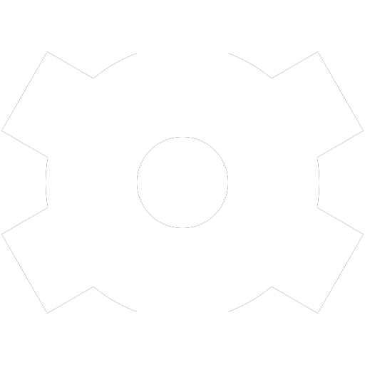
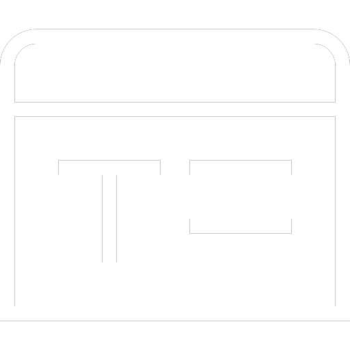

Precision
Prompt Lab
프롬프트 설계부터 음성 자막 추출까지,
AI 크리에이티브 워크플로우를 하나의 파이프라인으로.
Nano Banana
Google's standard generation model
FLUX.2 Pro
Speed-optimized detail generation
Z-Image
Instant lifelike portraits
GPT Image
True-color precision rendering
Grok
Powerful Al image generation by xAl
Nano Banana
Google's standard generation model
FLUX.2 Pro
Speed-optimized detail generation
Z-Image
Instant lifelike portraits
GPT Image
True-color precision rendering
Grok
Real-time intelligence and reasoning
Workflow Pipeline
All Systems Operational
PROMPT ENGINE
아이디어 입력

파라미터 설계
AI 프롬프트 생성

최적화 결과
Content Planning
기획
제작 가이드
편집 및 자막
업로드
Prompt Architecture Lab
Server Status: Online
01 간단한 프롬프트
MY PRESETS:
02 엔지니어링 파라미터
정면
0° · +0°끌기: 방향·거리 · 휠: 세기 · ⇧휠: 고도
고급 설정 (광원 · 질감 · 톤 · 보조광 · 색온도)
고급 설정 (화이트밸런스)
적용될 조명·카메라 · 예시 사진
프롬프트에 들어가는 문장 보기
05 엔지니어링 레이어 (공정)
L1
문맥 및 상황 정렬
대기 중
L2
스타일 일관성 유지
대기 중
L3
의미적 세부 확장
대기 중
06 프롬프트 (최적화) 재생성 필요
대기 중...
AI Image Studio
API Active
결과 이미지
결과 이미지가 여기에 표시됩니다
AI Video Studio BETA
VIDEO GENERATION SETTINGS
REFERENCE IMAGES · 최대 7장
첨부 이미지의 번호를 누르면 프롬프트에 참조가 삽입됩니다.
시작 프레임이 있으면 이미지 → 영상, 없으면 텍스트 → 영상으로 생성됩니다.
영상 생성은 관리자에게 승인받은 Google 계정으로 사용할 수 있습니다.
GENERATED VIDEO
생성된 영상이 여기에 표시됩니다
(보통 1~3분)
Video Production Studio
Server Status: Online
Autopilot Studio
목표만 입력하면 영상까지현재 계정은 영상 없이 자동 제작할 수 있습니다. 영상 생성은 관리자 승인이 필요합니다.
AUDIO & TIMELINE SETTINGS
TIMELINE DATA (SCRIPTS / TIME CODES)
대기 중... (핵심 의도를 입력한 후 생성 버튼을 누르세요)
📋 STORYBOARD GENERATOR
STORYBOARD OUTPUT
대기 중... (대본이나 주제를 입력한 후 생성 버튼을 누르세요)
🎥 SHOT LIST GENERATOR
SHOT LIST OUTPUT
대기 중... (시나리오를 입력한 후 생성 버튼을 누르세요)
🏷️ VIDEO SEO OPTIMIZER
SEO PACKAGE OUTPUT
대기 중... (영상 주제를 입력한 후 생성 버튼을 누르세요)
🎙️ SUPERTONIC 3 TTS
0 / 2000
모델 · Supertonic 3 © Supertone Inc. · 라이선스 OpenRAIL-M
내려받는 곳 · kimbs318 미러 → 공식 아카이브 (같은 파일, 앞에서 실패하면 다음으로)
저장 위치 · 다운로드 폴더가 아니라 이 브라우저의 사이트 저장소(Cache Storage ›
supertonic3-v1, 약 400MB)에 저장됩니다. 처음 한 번만 받고 이후엔 바로 실행되며, 서버를 거치지 않아 비용 0원입니다.확인·삭제 · F12 → Application → Cache storage →
supertonic3-v1 / 지우려면 Application → Storage → Clear site data참고 · 브라우저·기기마다 따로 저장(크롬에서 받아도 엣지·휴대폰은 다시 받음), 시크릿 창은 닫으면 삭제
VOICE OUTPUT
대기 중... (문장을 입력하고 음성 생성을 누르세요)
※ 생성된 음성은 AI 음성입니다. 게시할 때 'AI 음성' 표기를 권장합니다.
🎵 BGM & SFX ADVISOR
BGM & SFX RECOMMENDATIONS
대기 중... (영상 내용을 입력한 후 추천 버튼을 누르세요)
🎨 VIDEO CONCEPT BRIEF
CONCEPT BRIEF OUTPUT
대기 중... (영상 아이디어를 입력한 후 생성 버튼을 누르세요)
System Infrastructure
Global Network Operational
API LATENCY
--ms
Stable
SERVER UPTIME
00:00:00
Booting...
AI ENGINE STATUS
CONNECTING...
Active Node